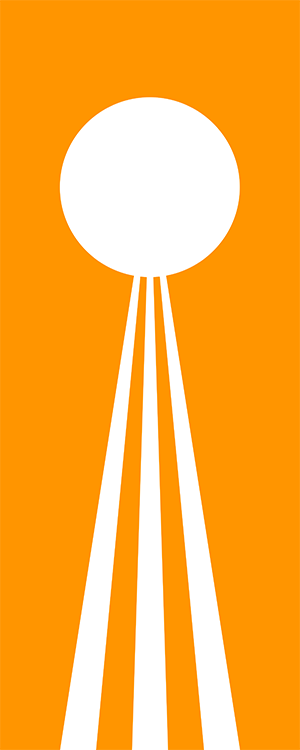

Vilousian Republic


| Vilous Republic | |
|---|---|
| Imperial Republic of Vilous | |
|  | |
| Motto | Quar equaī qa'naumel We progress together |
| Demonyms | Vilousian |
| Capital | Gold Ring, Tal, Vilous Fort Lon Sodd (Former) |
| Official languages | Khuyi-Sekir |
| Demographics | |
| Population | 1.116 billion |
| Ethnic groups | 99.9% vilousian < 0.1% terran, ikamo |
| Governance | |
| Government | Parliamentary confederation |
| Formation | 12M 694 |
| Economy | |
| Currency | ₴ Gold Ring Cevia |
| GDP | ~₴1.07 quadrillion ~₸3.63 quadrillion |
| GDP per capita | ~₴956,630 ~₸3.25 million |
{kind=link}
The Imperial Republic of Vilous (commonly referred to as the Vilousian Republic or Vilous Republic) is a confederation founded in 12M 694 by the Vilousian nations Shigu Kingdom and the Ring Collective. The nation occupies a region in forthward Juxta Sagittaria, sharing a loose border with the Terran Federation. It is the newest nation in the Galaxy, and is regarded as the primary representative nation of eltus civilisation.
Etymology
The Vilous Republic is named after the star Vilous, which Tal orbits; Vilous culture has strong ties to stars for ethnicity as opposed to planets in Terran culture.
The English name “Vilous” originates from the Vilousian Surveys from 663 to 689, although origins regarding specific personnel or even interview subjects remain unclear. The roots of the original Sekir word Híraus are even more obscure, with no prevailing theories as to its original meaning.
History
Much discussion for a peacekeeping alliance or even unified state on Tal had been discussed even before contact with the Terrans and Ikamo, with desire for peace following the Great Tal War, from 619 to 641, with social justice movements supporting the idea, especially in Gold Ring. However, much wartime rivalry still persisted, even during the Vilousian Surveys, meaning such plans never gained much foothold.
Contact and introduction into wider galactic society, however, renewed interest in unifying the eltus people: The individual city-states and kingdoms of Tal would have little voice against the more unified ones of the Terrans and Ikamo. In 694, both the Shigu Kingdom and Ring Collective signed the Cooperation Pact, founding the Vilousian Republic.
The importance of the Vilousian Republic unification began to be highlighted with the start of the Vilousian War, allowing the two member states to better coordinate military operations against Shigu Restorationists and Gold Ring Purists.
In 715, the political resources of the Vilousian Republic shifted to Gold Ring after the fall of Fort Lon Sodd.